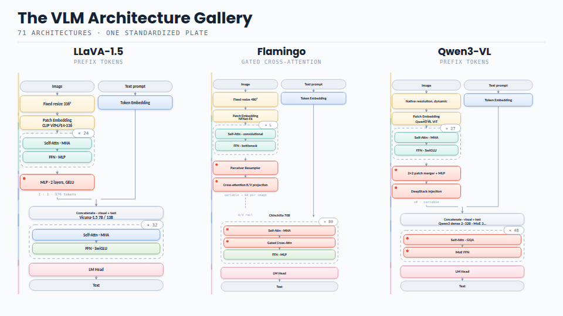
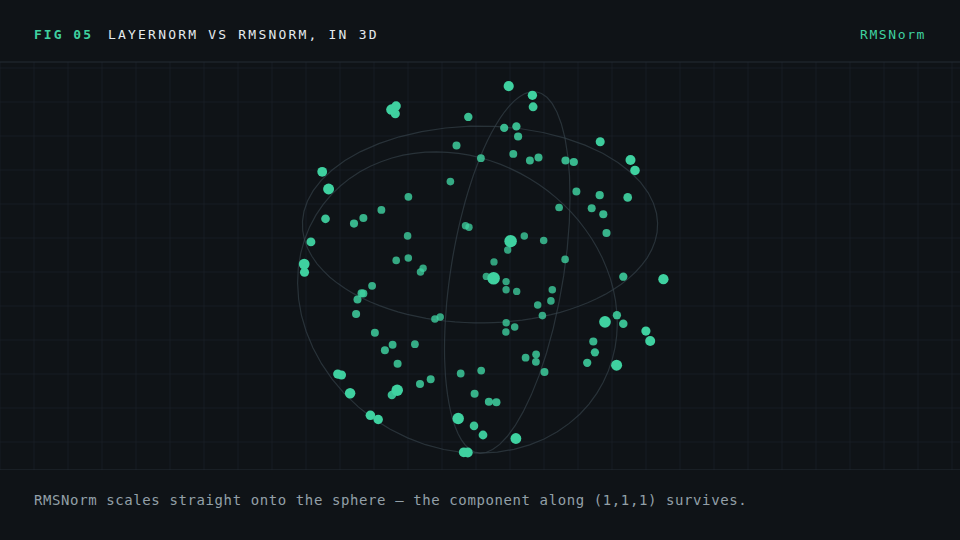
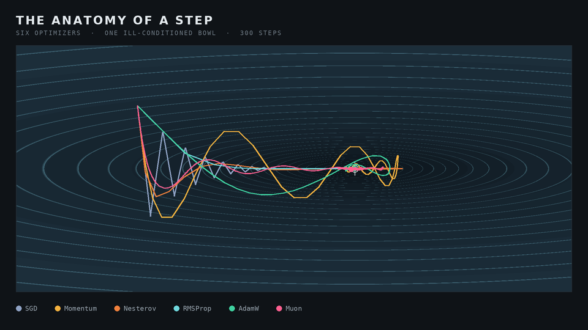
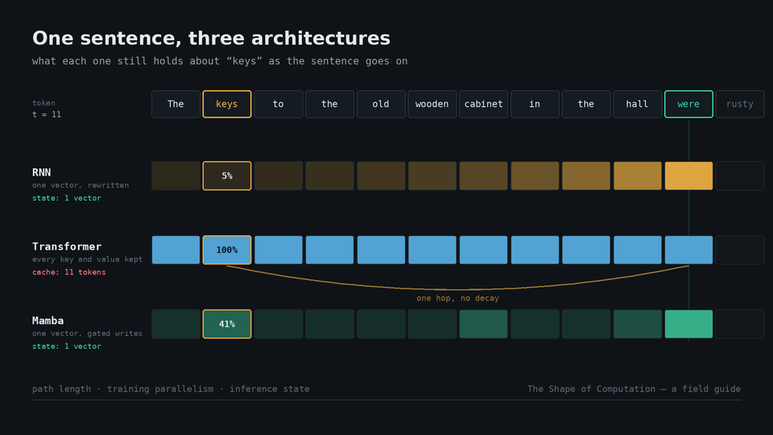
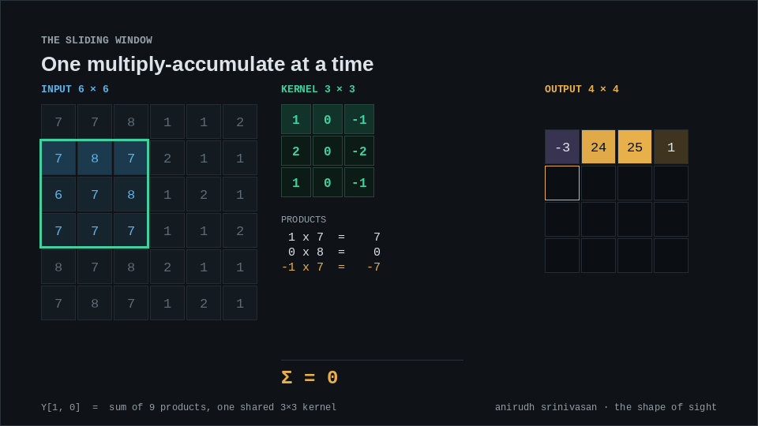

Animated Deepdives
Illustrated Notes
Long-form, visual explanations of vision-language models, deep learning, and the systems around them.
Showing all 10 articles

The VLM Architecture Gallery
Seventy-one architectures on one standardized plate, from gated cross-attention to encoders absorbed into the base model.

From Pixels to Visual Tokens
What changed in the visual half of VLMs: intake geometry, resolution, objectives, connectors, and the encoders models actually ship.

One Transformer, Two Modalities
A block-by-block comparison: tokenizing versus patchifying, lookup tables versus projections, positions, masks, and heads.

How Models Know Where They Are
Absolute, sinusoidal, relative, RoPE, NoPE, 2D and Fourier features, and multimodal M-RoPE—explained visually.

The Geometry of Normalization
Every normalization layer from BatchNorm to Peri-LN, plus why the modality interface in a VLM is a normalization problem.

The Activation Atlas
From sigmoid and ReLU to GELU, SwiGLU, and squared ReLU—with animated derivations and a map of what modern models use.

How Models Take a Step
A mechanical tour from SGD to Muon: how optimizers build an update, what their state costs, and where a training step stalls.

Evolution of ML Architectures
Sixty-seven years of neural architectures, including how information moves, what training costs, what inference carries, and how gradients flow backward.

An Image Is a Sentence
How Vision Transformers see, from the first patch embedding through ViT, DeiT, PVT, Swin, video transformers, and the cost of attention.

Across the CNNVerse
Thirty years of convolutional architecture, from sliding-window arithmetic and receptive fields to ResNet, EfficientNet, and ConvNeXt.